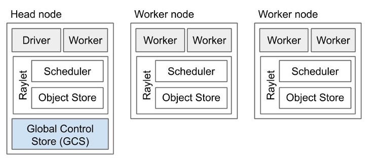
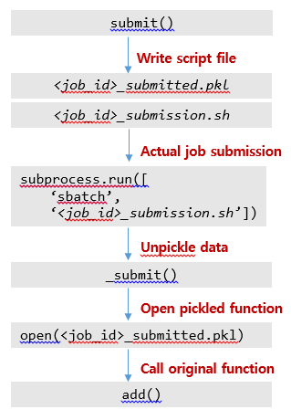
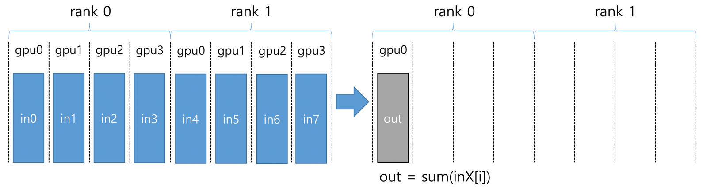

AI 멀티노드 활용¶
뉴론 시스템에서 딥러닝 학습에 필요한 계산을 멀티 노드를 이용하여 수십 개의 GPU에 나누어 동시에 처리하고, 고속 네트워크를 통한 결과를 합산하는 분산 학습을 위한 여러 방법을 소개합니다.
가. HOROVOD¶
Horovod는 고성능 분산 컴퓨팅 환경에서 노드간 메시지 전달 및 통신관리를 위해 일반적인 표준 MPI 모델을 사용하며, Horovod의 MPI구현은 표준 Tensorflow 분산 훈련 모델보다 간소화된 프로그래밍 모델을 제공합니다.
1. HOROVOD (Tensorflow) 설치 및 확인¶
1) 설치 방법¶
$ module load gcc/10.2.0 cuda/11.4 cudampi/openmpi-4.1.1 python/3.7.1 cmake/3.16.9
$ conda create -n my_tensorflow
$ source activate my_tensorflow
(my_tensorflow) $ conda install tensorflow-gpu=2.0.0 tensorboard=2.0.0 tensorflow-estimator=2.0.0 python=3.7 cudnn cudatoolkit=10 nccl=2.8.3
(my_tensorflow) $ HOROVOD_WITH_MPI=1 HOROVOD_GPU_OPERATIONS=NCCL \
HOROVOD_NCCL_LINK=SHARED HOROVOD_WITH_TENSORFLOW=1 \
pip install --no-cache-dir horovod==0.23.0
2) 설치 확인¶
(my_tensorflow) $ pip list | grep horovod
horovod 0.23.0
(my_tensorflow) $ python
>>> import horovod
>>> horovod.__version__ '0.23.0‘
(my_tensorflow) $ horovodrun -cb
Horovod v0.23.0:
Available Frameworks:
[X] TensorFlow
[X] PyTorch
[ ] MXNet
Available Controllers:
[X] MPI
[X] Gloo
Available Tensor Operations:
[X] NCCL
[ ] DDL
[ ] CCL
[X] MPI
[X] Gloo
2. HOROVOD (Tensorflow) 실행 예제¶
1) 작업제출 스크립트를 이용한 실행¶
#!/bin/bash
#SBATCH -J test_job
#SBATCH -p cas_v100_4
#SBATCH -N 2
#SBATCH -n 4
#SBATCH -o %x.o%j
#SBATCH -e %x.e%j
#SBATCH --time 00:30:00
#SBATCH --gres=gpu:2
#SBATCH --comment tensorflow
module purge
module load gcc/10.2.0 cuda/11.4 cudampi/openmpi-4.1.1 python/3.7.1
source activate my_tensorflow
horovodrun -np 2 python tensorflow2_mnist.py
2) 인터렉티브 작업제출을 이용한 실행¶
$ salloc --partition=cas_v100_4 -J debug --nodes=2 -n 4 --time=08:00:00 --gres=gpu:2 --comment=tensorflow
$ echo $SLURM_NODELIST
gpu[12-13]
$ module load gcc/10.2.0 cuda/11.4 cudampi/openmpi-4.1.1 python/3.7.1
$ source activate my_tensorflow
(my_tensorflow) $ horovodrun -np 4 -H gpu12:2,gpu13:2 python tensorflow2_mnist.py
3. HOROVOD (Pytorch) 설치 및 확인¶
1) 설치 방법¶
$ module load gcc/10.2.0 cuda/11.4 cudampi/openmpi-4.1.1 python/3.7.1 cmake/3.16.9
$ conda create -n my_pytorch
$ source activate my_pytorch
(my_pytorch) $ conda install pytorch=1.11.0 python=3.9 torchvision=0.12.0 torchaudio=0.11.0 cudatoolkit=10.2 -c pytorch
(my_pytorch) $ HOROVOD_WITH_MPI=1 HOROVOD_NCCL_LINK=SHARED HOROVOD_GPU_OPERATIONS=NCCL HOROVOD_WITH_PYTORCH=1 \
pip install --no-cache-dir horovod==0.24.0
2) 설치 확인¶
(my_pytorch) $ pip list | grep horovod
horovod 0.24.0
(my_pytorch) $ python
>>> import horovod
>>> horovod.__version__
'0.24.0'
(my_pytorch) $ horovodrun -cb
Horovod v0.24.0:
Available Frameworks:
[ ] TensorFlow
[X] PyTorch
[ ] MXNet
Available Controllers:
[X] MPI
[X] Gloo
Available Tensor Operations:
[X] NCCL
[ ] DDL
[ ] CCL
[X] MPI
[X] Gloo
4. HOROVOD (Pytorch) 실행 예제¶
1) 작업제출 스크립트 예제¶
#!/bin/bash
#SBATCH -J test_job
#SBATCH -p cas_v100_4
#SBATCH -N 2
#SBATCH -n 4
#SBATCH -o %x.o%j
#SBATCH -e %x.e%j
#SBATCH --time 00:30:00
#SBATCH --gres=gpu:2
#SBATCH --comment pytorch
module purge
module load gcc/10.2.0 cuda/11.4 cudampi/openmpi-4.1.1 python/3.7.1
source activate my_pytorch
horovodrun -np 2 python pytorch_ex.py
2) 인터렉티브 작업제출을 이용한 실행¶
$ salloc --partition=cas_v100_4 -J debug --nodes=2 -n 4 --time=08:00:00 --gres=gpu:2 --comment=pytorch
$ echo $SLURM_NODELIST gpu[22-23]
$ module load gcc/10.2.0 cuda/11.4 cudampi/openmpi-4.1.1 python/3.7.1
$ source activate my_pytorch
(my_pytorch) $ horovodrun -np 4 -H gpu22:2,gpu23:2 python pytorch_ex.py
나. GLOO¶
- GLOO는 Facebook 에서 개발한 오픈 소스 집단 커뮤니케이션 라이브러리로, horovod 에 포함되어 있으며 사용자가 MPI 를 설치하지 않고도 horovod 를 이용한 멀티노드 작업 수행을 지원합니다.
- GLOO의 설치는 horovod에 종속성을 가지며, horovod를 설치하는 과정에서 같이 설치됩니다.
※ horovod 의 설치방법은 상단의 horovod 설치 및 확인을 참고 바랍니다.
1. GLOO 실행 예제¶
1) 작업제출 스크립트 예제¶
#!/bin/bash
#SBATCH -J test_job
#SBATCH -p cas_v100_4
#SBATCH -N 2
#SBATCH -n 4
#SBATCH -o %x.o%j
#SBATCH -e %x.e%j
#SBATCH --time 00:30:00
#SBATCH --gres=gpu:2
#SBATCH --comment tensorflow
module purge
module load gcc/10.2.0 cuda/11.4 cudampi/openmpi-4.1.1 python/3.7.1
source activate my_tensorflow
horovodrun --gloo -np 4 python tensorflow2_mnist.py
2) 인터렉티브 작업제출을 이용한 실행¶
$ salloc --partition=cas_v100_4 -J debug --nodes=2 -n 4 --time=08:00:00 --gres=gpu:2 --comment=tensorflow
$ echo $SLURM_NODELIST
gpu[12-13]
$ module load gcc/10.2.0 cuda/11.4 cudampi/openmpi-4.1.1 python/3.7.1
$ source activate my_tensorflow
(my_tensorflow) $ horovodrun –np 4 --gloo --network-interface ib0 -H gpu12:2,gpu13:2 python tensorflow2_mnist.py
다. Ray¶
Ray는 멀티노드 환경에서 병렬 실행을 위한 python 기반의 워크로드를 제공합니다. 다양한 라이브러리를 사용하여 pytorch와 같은 딥러닝 모델에서 사용할 수 있습니다. 자세한 내용은 다음 홈페이지에서 확인할 수 있습니다.
https://docs.ray.io/en/latest/cluster/index.html
1. Ray 설치 및 단일 노드 실행 예제¶
1) 설치 방법¶
$ module load gcc/10.2.0 cuda/11.4 cudampi/openmpi-4.1.1 python/3.7.1
$ conda create -n my_ray
$ source activate my_ray
(my_ray) $ pip install --no-cache-dir ray
$ export PATH=/home01/${USER}/.local/bin:$PATH
2) 작업제출 스크립트 예제¶
#!/bin/bash
#SBATCH -J test_job
#SBATCH -p cas_v100_4
#SBATCH -N 1
#SBATCH -n 4
#SBATCH -o %x.o%j
#SBATCH -e %x.e%j
#SBATCH --time 00:30:00
#SBATCH --gres=gpu:2
#SBATCH --comment xxx
module purge
module load gcc/10.2.0 cuda/11.4 cudampi/openmpi-4.1.1 python/3.7.1
source activate my_ray
python test.py
{% code title="- test.py" %}
import ray
ray.init()
@ray.remote
def f(x):
return x * x
futures = [f.remote(i) for i in range(4)]
print(ray.get(futures)) # [0, 1, 4, 9]
@ray.remote
class Counter(object):
def __init__(self):
self.n = 0
def increment(self):
self.n += 1
def read(self):
return self.n
counters = [Counter.remote() for i in range(4)]
[c.increment.remote() for c in counters]
futures = [c.read.remote() for c in counters]
print(ray.get(futures)) # [1, 1, 1, 1]
{% endcode %}
3) 인터렉티브 작업제출을 이용한 실행¶
$ salloc --partition=cas_v100_4 -J debug --nodes=1 -n 4 --time=08:00:00 --gres=gpu:2 --comment=xxx
$ module load gcc/10.2.0 cuda/11.4 cudampi/openmpi-4.1.1 python/3.7.1
$ source activate my_ray
(my_tensorflow) $ python test.py
[0, 1, 4, 9]
[1, 1, 1, 1]
2. Ray Cluster 설치 및 멀티 노드 실행 예제¶
Ray는 멀티노드 실행 시 하나의 head 노드와 다수의 worker 노드로 실행되며, 테스크를 할당된 자원에 효율적으로 스케줄링 해 줍니다. 3

NERSC에서 작성한 예제는 GITHUB(https://github.com/NERSC/slurm-ray-cluster.git)를 통해 다운로드 할 수 있고, 다음과 같이 실행할 수 있습니다.
1) 설치 방법¶
$ git clone https://github.com/NERSC/slurm-ray-cluster.git
$ cd slurm-ray-cluster
[edit submit-ray-cluster.sbatch, start-head.sh, start-worker.sh]
$ sbatch submit-ray-cluster.sbatch
2) 작업제출 스크립트 예제¶
#!/bin/bash
#SBATCH -J ray_test
#SBATCH -p cas_v100_4
#SBATCH --time=00:10:00
### This script works for any number of nodes, Ray will find and manage all resources
#SBATCH --nodes=2
### Give all resources to a single Ray task, ray can manage the resources internally
#SBATCH --ntasks-per-node=4
#SBATCH --comment etc
#SBATCH --gres=gpu:2
# Load modules or your own conda environment here
module load gcc/8.3.0 cuda/10.0 cudampi/openmpi-3.1.0 python/3.7.1
source activate my_ray
export PATH=/home01/${USER} /.local/bin:$PATH
…
#### call your code below
python test.py
exit
{% code title="- start-head.sh" %}
#!/bin/bash
#export LC_ALL=C.UTF-8
#export LANG=C.UTF-8
echo "starting ray head node"
# Launch the head node
ray start --head --node-ip-address=$1 --port=12345 --redis-password=$2
sleep infinity
{% endcode %}
{% code title="- start-worker.sh" %}
#!/bin/bash
#export LC_ALL=C.UTF-8
#export LANG=C.UTF-8
echo "starting ray worker node"
ray start --address $1 --redis-password=$2
sleep infinity
{% endcode %}
3) output¶
==========================================
SLURM_JOB_ID = 107575
SLURM_NODELIST = gpu[21-22]
==========================================
'cuda/10.0' supports the {CUDA_MPI}.
IP Head: 10.151.0.21:12345
STARTING HEAD at gpu21
starting ray head node
2022-04-27 10:57:38,976 INFO services.py:1092 -- View the Ray dashboard at http://localhost:8265
2022-04-27 10:57:38,599 INFO scripts.py:467 -- Local node IP: 10.151.0.21
2022-04-27 10:57:39,000 SUCC scripts.py:497 -- --------------------
2022-04-27 10:57:39,000 SUCC scripts.py:498 -- Ray runtime started.
2022-04-27 10:57:39,000 SUCC scripts.py:499 -- --------------------
2022-04-27 10:57:39,000 INFO scripts.py:501 -- Next steps
2022-04-27 10:57:39,000 INFO scripts.py:503 -- To connect to this Ray runtime from another node, run
2022-04-27 10:57:39,000 INFO scripts.py:507 -- ray start --address='10.151.0.21:12345' --redis-password='90268c54-9df9-4d98-b363-ed6ed4d61a61'
2022-04-27 10:57:39,000 INFO scripts.py:509 -- Alternatively, use the following Python code:
2022-04-27 10:57:39,001 INFO scripts.py:512 -- import ray
2022-04-27 10:57:39,001 INFO scripts.py:519 -- ray.init(address='auto', _redis_password='90268c54-9df9-4d98-b363-ed6ed4d61a61')
2022-04-27 10:57:39,001 INFO scripts.py:522 -- If connection fails, check your firewall settings and network configuration.
2022-04-27 10:57:39,001 INFO scripts.py:526 -- To terminate the Ray runtime, run
2022-04-27 10:57:39,001 INFO scripts.py:527 -- ray stop
STARTING WORKER 1 at gpu22
starting ray worker node
2022-04-27 10:58:08,922 INFO scripts.py:591 -- Local node IP: 10.151.0.22
2022-04-27 10:58:09,069 SUCC scripts.py:606 -- --------------------
2022-04-27 10:58:09,069 SUCC scripts.py:607 -- Ray runtime started.
2022-04-27 10:58:09,069 SUCC scripts.py:608 -- --------------------
2022-04-27 10:58:09,069 INFO scripts.py:610 -- To terminate the Ray runtime, run
2022-04-27 10:58:09,069 INFO scripts.py:611 -- ray stop
2022-04-27 10:58:13,915 INFO services.py:1092 -- View the Ray dashboard at http://127.0.0.1:8265
[0, 1, 4, 9]
[1, 1, 1, 1]
3. Ray Cluster (pytorch) 설치 및 멀티 노드 실행 예제¶
1) 설치 방법¶
$ pip install --user torch torchvision torchaudio tabulate tensorboardX
[edit submit-ray-cluster.sbatch]
$ sbatch submit-ray-cluster.sbatch
2) 작업제출 스크립트 예제¶
#!/bin/bash
#SBATCH -J ray_test
#SBATCH -p cas_v100_4
#SBATCH --time=00:10:00
### This script works for any number of nodes, Ray will find and manage all resources
#SBATCH --nodes=2
### Give all resources to a single Ray task, ray can manage the resources internally
#SBATCH --ntasks-per-node=4
#SBATCH --comment etc
#SBATCH --gres=gpu:2
# Load modules or your own conda environment here
module load gcc/8.3.0 cuda/10.0 cudampi/openmpi-3.1.0 python/3.7.1
source activate my_ray
export PATH=/home01/${USER} /.local/bin:$PATH
…
#### call your code below
python examples/mnist_pytorch_trainable.py
exit
{% code title="- mnist_pytorch_trainable.py" %}
from __future__ import print_function
import argparse
import os
import torch
import torch.optim as optim
import ray
from ray import tune
from ray.tune.schedulers import ASHAScheduler
from ray.tune.examples.mnist_pytorch import (train, test, get_data_loaders,
ConvNet)
...
ray.init(address='auto', _node_ip_address=os.environ["ip_head"].split(":")[0], _redis_password=os.environ["redis_password"])
sched = ASHAScheduler(metric="mean_accuracy", mode="max")
analysis = tune.run(TrainMNIST,
scheduler=sched,
stop={"mean_accuracy": 0.99,
"training_iteration": 100},
resources_per_trial={"cpu":10, "gpu": 1},
num_samples=128,
checkpoint_at_end=True,
config={"lr": tune.uniform(0.001, 1.0),
"momentum": tune.uniform(0.1, 0.9),
"use_gpu": True})
print("Best config is:", analysis.get_best_config(metric="mean_accuracy", mode="max"))
{% endcode %}
3) output¶
...
== Status ==
Memory usage on this node: 57.4/377.4 GiB
Using AsyncHyperBand: num_stopped=11
Bracket: Iter 64.000: None | Iter 16.000: 0.9390625000000001 | Iter 4.000: 0.85625 | Iter 1.000: 0.534375
Resources requested: 80/80 CPUs, 8/8 GPUs, 0.0/454.88 GiB heap, 0.0/137.26 GiB objects
Result logdir: /home01/${USER}/ray_results/TrainMNIST_2022-04-27_11-24-20
Number of trials: 20/128 (1 PENDING, 8 RUNNING, 11 TERMINATED)
+------------------------+------------+------------------+-----------+------------+----------+--------+------------------+
| Trial name | status | loc | lr | momentum | acc | iter | total time (s) |
|------------------------+------------+------------------+-----------+------------+----------+--------+------------------|
| TrainMNIST_25518_00000 | RUNNING | 10.151.0.22:4128 | 0.0831396 | 0.691582 | 0.953125 | 26 | 4.98667 |
| TrainMNIST_25518_00001 | RUNNING | 10.151.0.22:4127 | 0.0581841 | 0.685648 | 0.94375 | 25 | 5.08798 |
| TrainMNIST_25518_00013 | RUNNING | | 0.0114732 | 0.386122 | | | |
| TrainMNIST_25518_00014 | RUNNING | | 0.686305 | 0.546706 | | | |
| TrainMNIST_25518_00015 | RUNNING | | 0.442195 | 0.525069 | | | |
| TrainMNIST_25518_00016 | RUNNING | | 0.647866 | 0.397167 | | | |
| TrainMNIST_25518_00017 | RUNNING | | 0.479493 | 0.429876 | | | |
| TrainMNIST_25518_00018 | RUNNING | | 0.341561 | 0.42485 | | | |
| TrainMNIST_25518_00019 | PENDING | | 0.205629 | 0.551851 | | | |
| TrainMNIST_25518_00002 | TERMINATED | | 0.740295 | 0.209155 | 0.078125 | 1 | 0.206633 |
| TrainMNIST_25518_00003 | TERMINATED | | 0.202496 | 0.102844 | 0.853125 | 4 | 1.17559 |
| TrainMNIST_25518_00004 | TERMINATED | | 0.431773 | 0.449912 | 0.85625 | 4 | 0.811173 |
| TrainMNIST_25518_00005 | TERMINATED | | 0.595764 | 0.643525 | 0.121875 | 1 | 0.214556 |
| TrainMNIST_25518_00006 | TERMINATED | | 0.480667 | 0.412854 | 0.728125 | 4 | 0.885571 |
| TrainMNIST_25518_00007 | TERMINATED | | 0.544958 | 0.280743 | 0.15625 | 1 | 0.185517 |
| TrainMNIST_25518_00008 | TERMINATED | | 0.277231 | 0.258283 | 0.48125 | 1 | 0.186344 |
| TrainMNIST_25518_00009 | TERMINATED | | 0.87852 | 0.28864 | 0.10625 | 1 | 0.203304 |
| TrainMNIST_25518_00010 | TERMINATED | | 0.691046 | 0.351471 | 0.103125 | 1 | 0.23274 |
| TrainMNIST_25518_00011 | TERMINATED | | 0.926629 | 0.17118 | 0.121875 | 1 | 0.267205 |
| TrainMNIST_25518_00012 | TERMINATED | | 0.618234 | 0.881444 | 0.046875 | 1 | 0.226228 |
+------------------------+------------+------------------+-----------+------------+----------+--------+------------------+
...
라. Submit it¶
Submitit은 Slurm 클러스터 내에서 계산을 위해 Python 함수를 제출하기 위한 경량 도구입니다. 기본적으로 스케줄러에 제출된 내용을 정리하여 결과, 로그 등에 대한 액세스를 제공합니다.
1. 예제 (1)¶
{% code title="- add.py" %}
#!/usr/bin/env python3
import submitit
def add(a, b):
return a + b
# create slurm wrapper object
executor = submitit.AutoExecutor(folder="log_test")
# update slurm parameters
executor.update_parameters(
partition=‘cas_V100_2’,
comment=‘python’ )
# submit job
job = executor.submit(add, 5, 7)
# print job ID
print(job.job_id)
# print result
print(job.result())
{% endcode %}
$ ./add.py
110651
12
{% code title="- 110651_submission.sh" %}
#!/bin/bash
# Parameters
#SBATCH --comment="python"
#SBATCH --error=/scratch/${USER}/2022/02-submitit/test/log_test/%j_0_log.err
#SBATCH --job-name=submitit
#SBATCH --nodes=1
#SBATCH --ntasks-per-node=1
#SBATCH --open-mode=append
#SBATCH --output=/scratch/${USER}/2022/02-submitit/test/log_test/%j_0_log.out
#SBATCH --partition=cas_v100_2
#SBATCH --signal=USR1@90
#SBATCH --wckey=submitit
# command
export SUBMITIT_EXECUTOR=slurm
srun
--output /scratch/${USER}/2022/02-submitit/test/log_test/%j_%t_log.out
--error /scratch/${USER}/2022/02-submitit/test/log_test/%j_%t_log.err
--unbuffered
/scratch/${USER}/.conda/submitit/bin/python3
-u
-m submitit.core._submit
/scratch/${USER}/2022/02-submitit/test/log_test
{% endcode %}
- Python function stored as pickle file
-rw-r--r-- 1 testuser01 tu0000 0 May 4 21:28 log_test/110651_0_log.err
-rw-r--r-- 1 testuser01 tu0000 476 May 4 21:28 log_test/110651_0_log.out
-rw-r--r-- 1 testuser01 tu0000 26 May 4 21:28 log_test/110651_0_result.pkl
-rw-r--r-- 1 testuser01 tu0000 634 May 4 21:28 log_test/110651_submitted.pkl
-rw-r--r-- 1 testuser01 tu0000 735 May 4 21:28 log_test/110651_submission.sh
2. 예제 (2)¶
{% code title="- add.py" %}
#!/usr/bin/env python3
def add(a, b):
return a + b
print(add(5, 7))
{% endcode %}
{% code title="- run.sh" %}
#!/bin/bash
#SBATCH --comment="python"
#SBATCH --job-name=submitit
#SBATCH --nodes=1
#SBATCH --ntasks-per-node=1
#SBATCH --partition=cas_v100_2
./add.py
{% endcode %}
$ sbatch run.sh
110650
{% code title="- add.py" %}
#!/usr/bin/env python3
import submitit
def add(a, b):
return a + b
# create slurm wrapper object
executor = submitit.AutoExecutor(folder="log_test")
# update slurm parameters
executor.update_parameters(
partition=‘cas_V100_2’,
comment=‘python’
)
# submit job
job = executor.submit(add, 5, 7)
# print job ID
print(job.job_id)
# print result
print(job.result())
{% endcode %}
$ ./add.py
110651
12

3. Submit: Multitask Job 예제¶
{% code title="- add_para.py" %}
#!/usr/bin/env python3
import submitit
def add(a, b):
return a + b
# create slurm object
executor = submitit.AutoExecutor(folder="log_test")
# slurm parameters
executor.update_parameters(
partition=‘cas_V100_2’,
comment=‘python’,
ntasks_per_node=3)
)
# submit job
job = executor.submit(add, 5, 7)
# print job ID
print(job.job_id)
# print results
print(job.results())
{% endcode %}
$ ./add_para.py
110658
[12, 12, 12]
{% code title="- submitit/submitit/slurm/slurm.py" %}
def _make_sbatch_string(
command: str,
folder: tp.Union[str, Path],
job_name: str = "submitit",
partition: tp.Optional[str] = None,
time: int = 5,
nodes: int = 1,
ntasks_per_node: tp.Optional[int] = None,
cpus_per_task: tp.Optional[int] = None,
cpus_per_gpu: tp.Optional[int] = None,
num_gpus: tp.Optional[int] = None, # legacy
gpus_per_node: tp.Optional[int] = None,
gpus_per_task: tp.Optional[int] = None,
qos: tp.Optional[str] = None, # quality of service
setup: tp.Optional[tp.List[str]] = None,
mem: tp.Optional[str] = None,
mem_per_gpu: tp.Optional[str] = None,
mem_per_cpu: tp.Optional[str] = None,
signal_delay_s: int = 90,
comment: tp.Optional[str] = None,
constraint: tp.Optional[str] = None,
exclude: tp.Optional[str] = None,
account: tp.Optional[str] = None,
gres: tp.Optional[str] = None,
exclusive: tp.Optional[tp.Union[bool, str]] = None,
array_parallelism: int = 256,
wckey: str = "submitit",
stderr_to_stdout: bool = False,
map_count: tp.Optional[int] = None, # used internally
additional_parameters: tp.Optional[tp.Dict[str, tp.Any]] = None,
srun_args: tp.Optional[tp.Iterable[str]] = None ) -> str:
{% endcode %}
- 110658_0_log.out
submitit INFO (2022-04-08 12:32:19,583)
- Starting with JobEnvironment(job_id=110658, hostname=gpu25, local_rank=0(3), node=0(1),
global_rank=0(3)) submitit INFO (2022-04-08 12:32:19,584)
- Loading pickle: /scratch/${USER}/2022/02-submitit/test/log_test/110658_submitted.pkl
submitit INFO (2022-04-08 12:32:19,612) - Job completed successfully
- 110658_1_log.out submitit
INFO (2022-04-08 12:32:19,584)
- Starting with JobEnvironment(job_id=110658, hostname=gpu25, local_rank=1(3), node=0(1), global_rank=1(3))
submitit INFO (2022-04-08 12:32:19,620)
- Loading pickle: /scratch/${USER}/2022/02-submitit/test/log_test/110658_submitted.pkl
submitit INFO (2022-04-08 12:32:19,624) - Job completed successfully
- 110658_2_log.out
submitit INFO (2022-04-08 12:32:19,583)
- Starting with JobEnvironment(job_id=110658, hostname=gpu25, local_rank=2(3), node=0(1), global_rank=2(3))
submitit INFO (2022-04-08 12:32:19,676)
- Loading pickle: /scratch/${USER}/2022/02-submitit/test/log_test/110658_submitted.pkl
submitit INFO (2022-04-08 12:32:19,681) - Job completed successfully
import torch
import torch.multiprocessing as mp
import torchvision
class NeuralNet(self):
def __init__(self):
self.layer1 = …
self.layer2 = …
#Allow passing an NN object to submit()
def __call__(self):
job_env = submitit.JobEnvironment() # local rank, global rank
dataset = torchvision.dataset.MNIST(…)
loader = torch.utils.data.DataLoader(…)
mp.spawn(…) # data distributed training
mnist = NeuralNet() … job = executor.submit(mnist)
...
job = executor.submit(mnist)
마. NCCL¶
뉴론 시스템에서 NVIDIA GPU에 최적화된 다중 GPU 및 다중 노드 집단 통신 라이브러리인 NCCL의 설치방법 및 예제 실행 방법을 소개합니다.
1. NCCL설치 및 확인¶
1) 설치 방법¶
https://developer.nvidia.com/nccl/nccl-legacy-downloads에서 설치를 원하는 버전 다운로드
$ tar Jxvf nccl_2.11.4-1+cuda11.4_x86_64.txz
2) 설치 확인¶
$ ls –al nccl_2.11.4-1+cuda11.4_x86_64/
include/ lib/ LICENSE.txt
2. NCCL실행 예제¶
1) 실행 예제 다운로드¶
$ git clone https://github.com/1duo/nccl-examples
2) 실행 예제 컴파일¶
$ module load gcc/10.2.0 cuda/11.4 cudampi/openmpi-4.1.1
$ cd nccl-example
$ mkdir build
$ cd build
$ cmake -DNCCL_INCLUDE_DIR=$NCCL_HOME/include
-DNCCL_LIBRARY=$NCCL_HOME/lib/libnccl.so ..
$ make
3) 실행 결과 확인¶
$ ./run.sh
Example 1: Single Process, Single Thread, Multiple Devices
Success
Example 2: One Device Per Process Or Thread
[MPI Rank 1] Success
[MPI Rank 0] Success
Example 3: Multiple Devices Per Thread
[MPI Rank 1] Success
[MPI Rank 0] Success
4) 위의 Example 3을 이용한 2노드 8GPU 실행 예제¶
4-1) 작업스크립트¶
#!/bin/sh
#SBATCH -J STREAM
#SBATCH --time=10:00:00 # walltime
#SBATCH --nodes=2
#SBATCH --ntasks-per-node=1
#SBATCH --cpus-per-task=1
#SBATCH --gres=gpu:4
#SBATCH -o %N_%j.out
#SBATCH -e %N_%j.err
#SBATCH -p amd_a100_4
srun build/examples/example-3
4-2) 예제 코드¶
//
// Example 3: Multiple Devices Per Thread
//
#include
#include "cuda_runtime.h"
#include "nccl.h"
#include "mpi.h"
#include
#include
#include
#define MPICHECK(cmd) do { \
int e = cmd; \
if( e != MPI_SUCCESS ) { \
printf("Failed: MPI error %s:%d '%d'\n", \
__FILE__,__LINE__, e); \
exit(EXIT_FAILURE); \
} \
} while(0)
#define CUDACHECK(cmd) do { \
cudaError_t e = cmd; \
if( e != cudaSuccess ) { \
printf("Failed: Cuda error %s:%d '%s'\n", \
__FILE__,__LINE__,cudaGetErrorString(e)); \
exit(EXIT_FAILURE); \
} \
} while(0)
#define NCCLCHECK(cmd) do { \
ncclResult_t r = cmd; \
if (r!= ncclSuccess) { \
printf("Failed, NCCL error %s:%d '%s'\n", \
__FILE__,__LINE__,ncclGetErrorString(r)); \
exit(EXIT_FAILURE); \
} \
} while(0)
static uint64_t getHostHash(const char *string) {
// Based on DJB2, result = result * 33 + char
uint64_t result = 5381;
for (int c = 0; string[c] != '\0'; c++) {
result = ((result << 5) + result) + string[c];
}
return result;
}
static void getHostName(char *hostname, int maxlen) {
gethostname(hostname, maxlen);
for (int i = 0; i < maxlen; i++) {
if (hostname[i] == '.') {
hostname[i] = '\0';
return;
}
}
}
int main(int argc, char *argv[]) {
//int size = 32 * 1024 * 1024;
int size = 5;
int myRank, nRanks, localRank = 0;
// initializing MPI
MPICHECK(MPI_Init(&argc, &argv));
MPICHECK(MPI_Comm_rank(MPI_COMM_WORLD, &myRank));
MPICHECK(MPI_Comm_size(MPI_COMM_WORLD, &nRanks));
// calculating localRank which is used in selecting a GPU
uint64_t hostHashs[nRanks];
char hostname[1024];
getHostName(hostname, 1024);
hostHashs[myRank] = getHostHash(hostname);
MPICHECK(MPI_Allgather(MPI_IN_PLACE, 0, MPI_DATATYPE_NULL,
hostHashs, sizeof(uint64_t), MPI_BYTE, MPI_COMM_WORLD));
for (int p = 0; p < nRanks; p++) {
if (p == myRank) {
break;
}
if (hostHashs[p] == hostHashs[myRank]) {
localRank++;
}
}
// each process is using four GPUs
int nDev = 4;
int **hostsendbuff = (int **) malloc(nDev * sizeof(int *));
int **hostrecvbuff = (int **) malloc(nDev * sizeof(int *));
int **sendbuff = (int **) malloc(nDev * sizeof(int *));
int **recvbuff = (int **) malloc(nDev * sizeof(int *));
cudaStream_t *s = (cudaStream_t *) malloc(sizeof(cudaStream_t) * nDev);
// picking GPUs based on localRank
for (int i = 0; i < nDev; ++i) {
hostsendbuff[i] = (int *) malloc(size * sizeof(int));
for (int j = 0; j < size; j++) {
hostsendbuff[i][j]=1;
}
hostrecvbuff[i] = (int *) malloc(size * sizeof(int));
CUDACHECK(cudaSetDevice(localRank * nDev + i));
CUDACHECK(cudaMalloc(sendbuff + i, size * sizeof(int)));
CUDACHECK(cudaMalloc(recvbuff + i, size * sizeof(int)));
CUDACHECK(cudaMemcpy(sendbuff[i], hostsendbuff[i], size * sizeof(int),
cudaMemcpyHostToDevice));
CUDACHECK(cudaMemset(recvbuff[i], 0, size * sizeof(int)));
CUDACHECK(cudaStreamCreate(s + i));
}
ncclUniqueId id;
ncclComm_t comms[nDev];
// generating NCCL unique ID at one process and broadcasting it to all
if (myRank == 0) {
ncclGetUniqueId(&id);
}
MPICHECK(MPI_Bcast((void *) &id, sizeof(id), MPI_BYTE, 0,
MPI_COMM_WORLD));
// initializing NCCL, group API is required around ncclCommInitRank
// as it is called across multiple GPUs in each thread/process
NCCLCHECK(ncclGroupStart());
for (int i = 0; i < nDev; i++) {
CUDACHECK(cudaSetDevice(localRank * nDev + i));
NCCLCHECK(ncclCommInitRank(comms + i, nRanks * nDev, id,
myRank * nDev + i));
}
NCCLCHECK(ncclGroupEnd());
// calling NCCL communication API. Group API is required when
// using multiple devices per thread/process
NCCLCHECK(ncclGroupStart());
for (int i = 0; i < nDev; i++) {
NCCLCHECK(ncclAllReduce((const void *) sendbuff[i],
(void *) recvbuff[i], size, ncclInt, ncclSum,
comms[i], s[i]));
}
NCCLCHECK(ncclGroupEnd());
// synchronizing on CUDA stream to complete NCCL communication
for (int i = 0; i < nDev; i++) {
CUDACHECK(cudaStreamSynchronize(s[i]));
}
// freeing device memory
for (int i = 0; i < nDev; i++) {
CUDACHECK(cudaMemcpy(hostrecvbuff[i], recvbuff[i], size * sizeof(int),
cudaMemcpyDeviceToHost));
CUDACHECK(cudaFree(sendbuff[i]));
CUDACHECK(cudaFree(recvbuff[i]));
}
printf(" \n");
for (int i = 0; i < nDev; i++) {
printf("%s rank:%d gpu%d ", hostname, myRank, i);
for (int j = 0; j < size; j++) {
printf("%d ", hostsendbuff[i][j]);
}
printf("\n");
}
printf(" \n");
for (int i = 0; i < nDev; i++) {
printf("%s rank:%d gpu%d ", hostname, myRank, i);
for (int j = 0; j < size; j++) {
printf("%d ", hostrecvbuff[i][j]);
}
printf("\n");
}
// finalizing NCCL
for (int i = 0; i < nDev; i++) {
ncclCommDestroy(comms[i]);
}
// finalizing MPI
MPICHECK(MPI_Finalize());
printf("[MPI Rank %d] Success \n", myRank);
return 0;
}
4-3) 실행 결과¶
gpu37 rank:1 gpu0 1 1 1 1 1 1 1 1
gpu37 rank:1 gpu1 2 2 2 2 2 2 2 2
gpu37 rank:1 gpu2 3 3 3 3 3 3 3 3
gpu37 rank:1 gpu3 4 4 4 4 4 4 4 4
gpu37 rank:1 gpu0 0 0 0 0 0 0 0 0
gpu37 rank:1 gpu1 0 0 0 0 0 0 0 0
gpu37 rank:1 gpu2 0 0 0 0 0 0 0 0
gpu37 rank:1 gpu3 0 0 0 0 0 0 0 0
[MPI Rank 1] Success
gpu36 rank:0 gpu0 1 1 1 1 1 1 1 1
gpu36 rank:0 gpu1 2 2 2 2 2 2 2 2
gpu36 rank:0 gpu2 3 3 3 3 3 3 3 3
gpu36 rank:0 gpu3 4 4 4 4 4 4 4 4
gpu36 rank:0 gpu0 20 20 20 20 20 20 20 20
gpu36 rank:0 gpu1 0 0 0 0 0 0 0 0
gpu36 rank:0 gpu2 0 0 0 0 0 0 0 0
gpu36 rank:0 gpu3 0 0 0 0 0 0 0 0
[MPI Rank 0] Success

바. Tensorflow Distribute¶
Tensorflow Distibute는 멀티 GPU 또는 멀티 서버를 활용하여 분산 훈련을 할 수 있는 Tensorflow API 입니다(Tensorflow 2.0 사용).
1. Conda 환경에서 tensorflow 설치 및 확인¶
1) 설치 방법¶
$ module load python/3.7.1
$ conda create -n tf_test
$ conda activate tf_test
(tf_test) $ conda install tensorflow
2) 설치 확인¶
(tf_test) $ conda list | grep tensorflow
tensorflow 2.0.0 gpu_py37h768510d_0
tensorflow-base 2.0.0 gpu_py37h0ec5d1f_0
tensorflow-estimator 2.0.0 pyh2649769_0
tensorflow-gpu 2.0.0 h0d30ee6_0
tensorflow-metadata 1.7.0 pypi_0 pypi
2. 단일 노드, 멀티 GPU 활용(tf.distribute.MirroredStrategy() 사용)¶
1) 코드 예제(tf_multi_keras.py)¶
import tensorflow as tf
import numpy as np
import os
strategy = tf.distribute.MirroredStrategy()
BUFFER_SIZE = 1000
n_workers = 1
batch_size_per_gpu = 64
global_batch_size = batch_size_per_gpu * n_workers
def mnist_dataset(batch_size):
(x_train, y_train), _ = tf.keras.datasets.mnist.load_data()
x_train = x_train / np.float32(255)
y_train = y_train.astype(np.int64)
train_dataset = tf.data.Dataset.from_tensor_slices((x_train, y_train)).shuffle(60000).repeat().batch(batch_size)
return train_dataset
def build_and_compile_cnn_model():
model = tf.keras.Sequential([
tf.keras.Input(shape=(28, 28)),
tf.keras.layers.Reshape(target_shape=(28, 28, 1)),
tf.keras.layers.Conv2D(32, 3, activation='relu'),
tf.keras.layers.Flatten(),
tf.keras.layers.Dense(128, activation='relu'),
tf.keras.layers.Dense(10)
])
model.compile(
loss=tf.keras.losses.SparseCategoricalCrossentropy(from_logits=True),
optimizer=tf.keras.optimizers.SGD(learning_rate=0.001),
metrics=['accuracy'])
return model
dataset = mnist_dataset(global_batch_size)
with strategy.scope():
multi_worker_model = build_and_compile_cnn_model()
multi_worker_model.fit(dataset, epochs=5, steps_per_epoch=BUFFER_SIZE)
2) 인터렉티브 작업 제출(1노드 4개 GPU)¶
$ salloc --partition=cas_v100_4 --nodes=1 --ntasks-per-node=4 --gres=gpu:4 --comment=etc
$ conda activate tf_test
(tf_test) $ module load python/3.7.1
(tf_test) $ python tf_multi_keras.py
3) 배치 작업 제출 스크립트(1노드 4GPU)(tf_dist_run.sh)¶
#!/bin/bash
#SBATCH -J tf_dist_test
#SBATCH -p cas_v100_4
#SBATCH -N 1
#SBATCH -n 4
#SBATCH -o %x.o%j
#SBATCH -e %s.e%j
#SBATCH --time 00:30:00
#SBATCH --gres=gpu:4
#SBATCH –comment etc
module purge
module load python/3.7.1
source activate tf_test
python tf_multi_keras.py
3. 멀티 노드, 멀티 GPU 활용(tf.distribute.MultiWorkerMirroedStrategy() 사용)¶
멀티 노드에서 활용하기 위해 전략을 수정하고 각 노드에 환경 변수 TF_CONFIG 설정합니다.
1) 코드 예제 수정¶
strategy = tf.distribute.experimental.MultiWorkerMirroredStrategy()
2) 인터렉티브 작업 제출(2노드 각 4 GPU)¶
$ salloc --partition=cas_v100_4 --nodes=2 --ntasks-per-node=4 --gres=gpu:4 --comment=etc
$ sconstrol show hostnames
gpu01
gpu02
gpu01$ conda activate tf_test
(tf_test) $ module load python/3.7.1
(tf_test) $ export TF_CONFIG='{"cluster": {"worker": ["gpu01:12345", "gpu02:12345"]}, "task": {"index": 0, "type": "worker"}}'
(tf_test) $ python tf_multi_keras.py
gpu02$ conda activate tf_test
(tf_test) $ module load python/3.7.1
(tf_test) $ export TF_CONFIG='{"cluster": {"worker": ["gpu01:12345", "gpu02:12345"]}, "task": {"index": 1, "type": "worker"}}'
(tf_test) $ python tf_multi_keras.py
3) 배치 작업 제출 스크립트(2노드 각4GPU) (tf_multi_run.sh)¶
#!/bin/bash
#SBATCH -J tf_multi_test
#SBATCH -p 4gpu
#SBATCH -N 2
#SBATCH -n 4
#SBATCH -o ./out/%x.o%j
#SBATCH -e ./out/%x.e%j
#SBATCH --time 01:00:00
###SBATCH --gres=gpu:4
#SBATCH --comment etc
module purge
module load python/3.7.1
source activate tf_test
worker=(`scontrol show hostnames`)
num_worker=${#worker[@]}
PORT=12345
unset TF_CONFIG
for i in ${worker[@]}
do
tmp_TF_CONFIG=\"$i":"$PORT\"
TF_CONFIG=$TF_CONFIG", "$tmp_TF_CONFIG
done
TF_CONFIG=${TF_CONFIG:2}
cluster=\"cluster\"": "\{\"worker\"": "\[$TF_CONFIG\]\}
j=0
while [ $j -lt $num_worker ]
do
task=\"task\"": "\{\"index\"": "$j", "\"type\"": "\"worker\"\}
tmp=${cluster}", "${task}
tmp2=\'\{${tmp}\}\'
ssh ${worker[$j]} "conda activate tf_test; export TF_CONFIG=$tmp2; python tf_multi_keras.py” &
j=$(($j+1))
done
4. 참조¶
- 케라스(Keras)를 활용한 분산 훈련(https://www.tensorflow.org/tutorials/distribute/keras)
- [텐서플로2] MNIST 데이터를 훈련 데이터로 사용한 DNN 학습(http://www.gisdeveloper.co.kr/?p=8534)
사. PytorchDDP¶
- PytorchDDP(DistributedDataParallel)는 멀티 노드, 멀티GPU환경에서 실행할 수 있는 분산 데이터 병렬처리 기능을 제공합니다. PytorchDDP 기능 및 튜토리얼은 아래 웹사이트를 참고 바랍니다.
- https://pytorch.org/tutorials/intermediate/ddp_tutorial.html
- https://github.com/pytorch/examples/blob/main/distributed/ddp/README.md
아래 예제는 PytorchDDP를 slurm 스케줄러를 통한 실행 방법입니다.
1. 작업제출 스크립트 예제¶
1) 단일노드 예제(단일노드 2GPU)¶
#!/bin/bash -l
#SBATCH -J PytorchDDP
#SBATCH -p cas_v100_4
#SBATCH --nodes=1
#SBATCH --ntasks-per-node=1
#SBATCH --gres=gpu:2
#SBATCH --comment pytorch
#SBATCH --time 1:00:00
#SBATCH -o %x.o%j
#SBATCH -e %x.e%j
# Configuration
traindata='{path}'
master_port="$((RANDOM%55535+10000))"
# Load software
conda activate pytorchDDP
# Launch one SLURM task, and use torch distributed launch utility
# to spawn training worker processes; one per GPU
srun -N 1 -n 1 python main.py -a config \
--dist-url "tcp://127.0.0.1:${master_port}" \
--dist-backend 'nccl' \
--multiprocessing-distributed \
--world-size $SLURM_TASKS_PER_NODE \
--rank 0 \
$traindata
2) 멀티노드 예제(2노드 2GPUs)¶
#!/bin/bash -l
#SBATCH -J PytorchDDP
#SBATCH -p cas_v100_4
#SBATCH --nodes=2
#SBATCH --ntasks-per-node=1
#SBATCH --gres=gpu:1
#SBATCH --comment pytorch
#SBATCH --time 10:00:0
#SBATCH -o %x.o%j
#SBATCH -e %x.e%j
# Load software list
module load {module name}
conda activate {conda name}
# Setup node list
nodes=$(scontrol show hostnames $SLURM_JOB_NODELIST) # Getting the node names
nodes_array=( $nodes )
master_node=${nodes_array[0]}
master_addr=$(srun --nodes=1 --ntasks=1 -w $master_node hostname --ip-address)
master_port=$((RANDOM%55535+10000))
worker_num=$(($SLURM_JOB_NUM_NODES))
# Loop over nodes and submit training tasks
for (( node_rank=0; node_rank<$worker_num; node_rank++ )); do
node=${nodes_array[$node_rank]}
echo "Submitting node # $node_rank, $node"
# Launch one SLURM task per node, and use torch distributed launch utility
# to spawn training worker processes; one per GPU
srun -N 1 -n 1 -w $node python main.py -a $config \
--dist-url tcp://$master_addr:$master_port \
--dist-backend 'nccl' \
--multiprocessing-distributed \
--world-size $SLURM_JOB_NUM_NODES \
--rank $node_rank &
pids[${node_rank}]=$!
done
# Wait for completion
for pid in ${pids[*]}; do
wait $pid
done
{% hint style="info" %} 2022년 7월 7일에 마지막으로 업데이트 되었습니다.